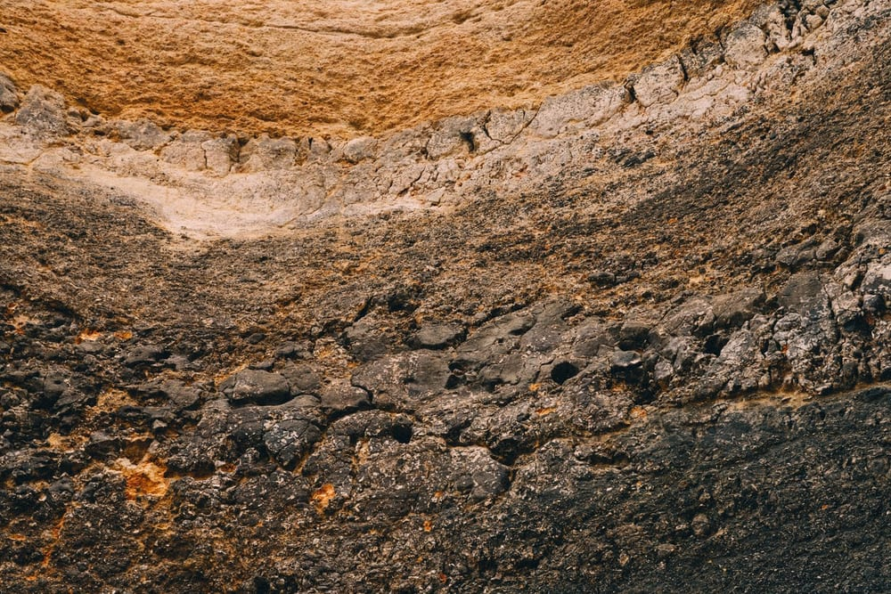
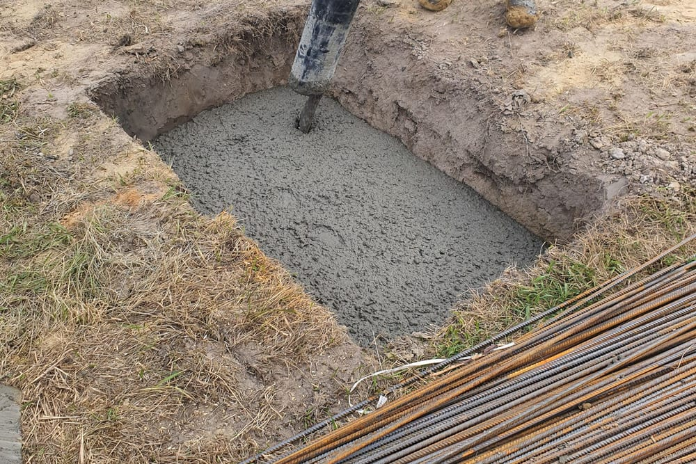

Qu'est-ce qu'un rapport géotechnique, et pourquoi vous en demande-t-on un ?
Un rapport géotechnique, que la plupart des particuliers appellent simplement étude de sol ou rapport de sol, est le document qui décrit la nature et le comportement du terrain sur lequel un projet doit être construit. Il est établi à partir de sondages, de prélèvements et d'essais réalisés directement sur le site, puis interprétés pour en tirer des recommandations de construction.
Ce document est produit par un bureau d'études géotechniques, c'est-à-dire un géotechnicien. Ce n'est pas le même métier qu'un bureau d'études structure comme MH Structure : le géotechnicien va sur le terrain, fore, prélève et teste le sol. Le bureau d'études structure, lui, exploite ensuite ces résultats pour dimensionner les fondations et la structure du bâtiment.
On vous demande une étude de sol pour une raison simple : sans elle, personne ne peut dire avec certitude à quelle profondeur le sol est capable de porter un bâtiment, ni si le terrain présente des risques particuliers (eau, argile gonflante, remblai, cavité). Construire sans cette information revient à dimensionner des fondations à l'aveugle.
Un rapport géotechnique n'est pas produit par MH Structure. Nous n'intervenons pas dans la réalisation des sondages ni des essais de sol : c'est le métier du géotechnicien. Notre rôle commence à réception de ce rapport, pour l'analyser et en tirer le dimensionnement de vos fondations.
Les missions géotechniques G1 à G5 de la norme NF P 94-500
La norme NF P 94-500 organise les études géotechniques en missions normalisées, notées G1 à G5. Chacune correspond à un stade précis du projet et répond à un besoin différent. Confondre ces missions, ou s'arrêter à la première, est l'une des causes les plus fréquentes de mauvaise surprise en cours de chantier.
| Mission | Stade du projet | Ce qu'elle apporte |
|---|---|---|
| G1 (ES + PGC) | Faisabilité, avant tout projet précis | Première approche des risques du site et des principes de construction envisageables, sans dimensionnement |
| G2 phase AVP | Avant-projet | Principes de fondations envisageables, hypothèses géotechniques préliminaires pour orienter la conception |
| G2 phase PRO | Projet, avant travaux | Dimensionnement géotechnique précis : contrainte admissible du sol, profondeur d'ancrage, type de fondation retenu |
| G3 | Exécution, réalisée par l'entreprise | Suivi et adaptation des dispositions constructives en fonction du sol réellement rencontré à l'ouverture des fouilles |
| G4 | Exécution, supervision | Contrôle de la conformité des travaux géotechniques d'exécution par rapport à l'étude de conception |
| G5 | Ponctuelle, à tout moment | Diagnostic ciblé sur un désordre précis (fissures, tassement), indépendant de la séquence G1 à G4 |
Pour un particulier, l'essentiel à retenir est simple : c'est la mission G2, et en particulier sa phase PRO, qui contient les données exploitables pour dimensionner des fondations. Une G1 seule, souvent la seule fournie à ce stade, ne suffit jamais à cet usage.

L'obligation d'étude de sol à la vente d'un terrain en zone d'argile
Depuis la loi ELAN, une étude géotechnique doit obligatoirement être fournie par le vendeur lors de la vente d'un terrain non bâti constructible situé dans une zone d'exposition moyenne ou forte au phénomène de retrait-gonflement des argiles. Cette obligation vise à informer l'acquéreur, avant la signature, d'un risque connu pour provoquer des désordres sur les constructions : mouvements du sol liés à l'alternance de périodes sèches et humides.
Il faut cependant être clair sur ce que couvre réellement cette étude fournie à la vente. Il s'agit d'une étude de type G1, centrée sur l'identification du risque argile à l'échelle de la parcelle. Elle ne dimensionne rien : elle ne dit ni la profondeur d'ancrage à retenir, ni le type de fondation adapté à votre projet précis.
L'étude fournie à la vente ne remplace pas l'étude nécessaire à la construction. Même en présence d'un rapport G1 remis par le vendeur, une mission G2 restera nécessaire avant de construire, pour obtenir les données de dimensionnement adaptées à votre projet et à son implantation exacte sur la parcelle.
Comment lire les résultats sans être ingénieur
Un rapport géotechnique complet peut atteindre plusieurs dizaines de pages, avec des tableaux d'essais et des coupes géologiques. Sans être ingénieur, quatre repères suffisent pour en suivre l'essentiel :
- La contrainte admissible du sol : exprimée en kPa ou en bars, c'est la valeur qui indique la charge que le sol peut supporter sans tasser de manière excessive. Elle conditionne directement la surface des fondations à prévoir.
- Le niveau d'assise recommandé : la profondeur, par rapport au terrain naturel, à laquelle les fondations doivent être ancrées pour s'appuyer sur un sol suffisamment porteur et hors gel ou hors variation d'humidité.
- La présence d'eau : la profondeur d'une éventuelle nappe phréatique influence le choix du type de fondation et les précautions à prendre pendant les travaux de terrassement.
- La nature et la succession des couches : le log de sondage décrit, couche par couche, ce que l'on rencontre en descendant (terre végétale, remblai, argile, sable, roche). Une couche de mauvaise qualité proche de la surface peut imposer de descendre plus profondément que prévu.
En cas de doute sur la lecture de ces éléments, le plus efficace reste d'échanger directement avec le bureau d'études qui exploitera le rapport pour dimensionner vos fondations, plutôt que de chercher à interpréter seul chaque valeur.
Le lien direct avec vos fondations
Le rapport géotechnique n'est pas une pièce administrative de plus : c'est lui qui détermine concrètement le choix et le dimensionnement de vos fondations superficielles. À partir de ses résultats, notamment la contrainte admissible et le niveau d'assise, plusieurs décisions sont prises :
- Le type de fondation : semelles isolées sous poteaux, semelles filantes sous murs, ou radier général lorsque le sol est peu porteur ou hétérogène sur l'emprise du bâtiment.
- La profondeur d'ancrage : fixée par le niveau d'assise recommandé, elle conditionne le volume de terrassement et le niveau du premier plancher.
- Les dimensions des semelles : calculées pour que la pression transmise au sol reste inférieure à la contrainte admissible, une fois combinée à la descente de charges du bâtiment.
- Les dispositions particulières en sol argileux : profondeur d'ancrage renforcée, chaînages horizontaux et verticaux continus, joints de rupture entre bâtiments de rigidités différentes, pour limiter les effets d'un sol qui gonfle ou se rétracte selon son humidité.
Autrement dit, deux maisons identiques en plan peuvent recevoir des fondations totalement différentes selon ce que révèle leur rapport géotechnique respectif.

Les pièges fréquents à connaître
Certaines erreurs reviennent régulièrement et fragilisent le dimensionnement des fondations, même lorsqu'un rapport géotechnique existe bel et bien :
- Un rapport trop ancien : un sol évolue, un terrain peut avoir été remblayé, drainé ou modifié depuis l'étude. Un rapport de plusieurs années, ou réalisé pour un projet différent, doit être réactualisé avant d'être utilisé.
- Une mission insuffisante : une G1 seule, aussi utile soit-elle pour identifier un risque, ne comporte pas de dimensionnement et ne peut jamais servir de base directe au calcul des fondations. Il faut une G2, phase PRO, pour cela.
- Des sondages non représentatifs de l'emprise du projet : un ou deux sondages positionnés loin de l'implantation réelle du bâtiment, ou trop peu profonds, peuvent masquer une couche défavorable présente ailleurs sur la parcelle.
Dans les trois cas, le résultat est le même : des fondations dimensionnées sur une base incomplète, avec un risque de désordre qui n'apparaît parfois que plusieurs années après la construction.
Comment MH Structure exploite votre rapport géotechnique
MH Structure n'établit pas le rapport géotechnique lui-même, mais l'exploite pleinement une fois qu'il nous est transmis :
- Analyse du rapport transmis par votre géotechnicien : contrainte admissible, niveau d'assise, présence d'eau, nature des couches.
- Choix du type de fondation adapté au projet et aux résultats du sol : semelles isolées, semelles filantes ou radier.
- Dimensionnement selon l'Eurocode 2, intégré à la note de calcul et aux plans de coffrage et d'armatures.
- Conseil sur la mission géotechnique à commander si vous n'avez pas encore de rapport, ou si celui en votre possession est trop ancien ou insuffisant pour votre projet.
Vous avez déjà un rapport géotechnique, ou vous devez en commander un ? Transmettez-nous votre rapport, ou parlons de votre projet pour orienter la mission géotechnique adaptée : nous prenons ensuite en charge le choix et le dimensionnement de vos fondations. Devis gratuit sous 48h.
Questions fréquentes
Rapport géotechnique et étude de sol, est-ce la même chose ?
Oui. Le rapport géotechnique est le nom technique du document que les particuliers appellent le plus souvent étude de sol ou rapport de sol. Il est établi par un bureau d'études géotechniques à partir de sondages et d'essais réalisés sur le terrain, et décrit la nature des sols, leur portance et les risques identifiés (eau, argile, cavités).
Une étude de sol G1 suffit-elle pour construire ?
Non. La mission G1 donne une première approche qualitative des risques géotechniques du site, mais elle ne comporte aucun dimensionnement. Pour choisir et dimensionner des fondations, il faut une mission G2, en particulier son volet PRO qui fournit la contrainte admissible du sol, la profondeur d'ancrage et les dispositions constructives adaptées.
Dans quels cas l'étude de sol est-elle obligatoire à la vente d'un terrain ?
Depuis la loi ELAN, une étude géotechnique doit être fournie par le vendeur lors de la vente d'un terrain non bâti constructible situé en zone d'exposition moyenne ou forte au retrait-gonflement des argiles. Cette étude renseigne sur l'existence du risque argile mais reste insuffisante à elle seule pour dimensionner les fondations du projet.
MH Structure réalise-t-il les études de sol ?
Non. La réalisation du rapport géotechnique, avec sondages et essais sur le terrain, relève du métier de géotechnicien. MH Structure exploite ce rapport une fois transmis : nous l'analysons, choisissons le type de fondation adapté et le dimensionnons selon l'Eurocode 2. Nous pouvons aussi conseiller sur la mission géotechnique à commander avant de démarrer un projet.
CREDIT PHOTO A COMPLETER